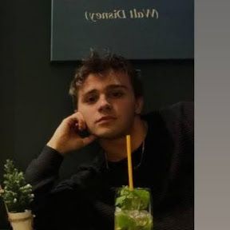

Programmatore PLC | Automazione Industriale 4.0
Diploma ITI Cattaneo - Dall'Aglio Elettronica ed Elettrotecnica - Articolazione Automazione
Email: mattiacosti04@gmail.com
LinkedIn: linkedin.com/in/mattia-costi-7a5028275/